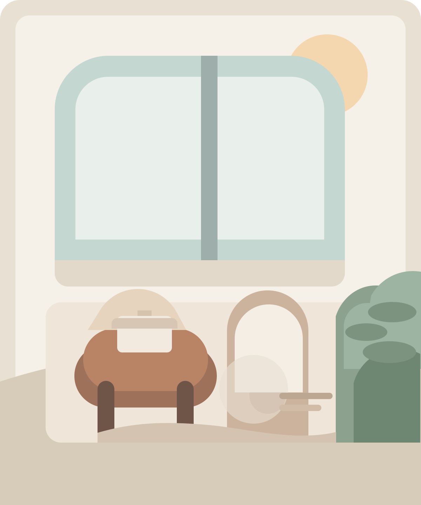

À propos
Un parcours ancré dans le réel

Je n'ai pas toujours été psychothérapeute.
Avant de me former à la thérapie, j'ai travaillé pendant près de vingt ans dans le monde de l'entreprise. J'ai d'abord été journaliste au sein d'une chaîne de télévision internationale, avant d'entamer, au fil d'un déménagement en Asie, un parcours dans des environnements corporate exigeants. J'y ai occupé des fonctions de leadership dans de grandes entreprises du secteur technologique, à la croisée de la communication, de la transformation organisationnelle et de l'accompagnement du changement.
Ces années m'ont donné une connaissance concrète du monde du travail, de ses exigences, de ses codes, de ses tensions, mais surtout des réalités humaines qui le traversent. J'y ai rencontré, chez les autres comme en moi, des questions de reconnaissance, de loyauté, de sens, de pression, d'identité, de fatigue, et parfois de perte de repères.
Mon parcours s'est construit à travers de nombreuses transitions, professionnelles, culturelles et personnelles. Vivre et travailler dans plusieurs pays, changer de langue de travail, me réinventer professionnellement, devenir mère, traverser aussi l'expérience du deuil : autant de passages qui m'ont confrontée, de l'intérieur, à ce que signifie la perte, voir ses repères bouger, devoir s'adapter, mais aussi trouver de nouvelles ressources, recréer du lien et se transformer.
Un fil essentiel traverse ce chemin : le fait d'avoir moi-même été accompagnée en thérapie sur la durée. Cet espace, à la fois soutenant, sécurisant et parfois confrontant, a été pour moi un lieu précieux pour déposer, traverser, comprendre et transformer certaines expériences. Il a nourri ma manière d'être en relation, ma sensibilité clinique, et la façon dont j'accueille aujourd'hui la parole de l'autre.
C'est tout cela qui nourrit ma pratique. Cela me permet d'accompagner avec présence et justesse des problématiques liées à l'attachement, au travail, à l'identité, aux transitions de vie, à l'expatriation, au deuil, à l'épuisement ou aux tensions relationnelles, non pas à partir de catégories abstraites, mais avec une attention réelle à la singularité de chaque histoire.
Je suis également accréditée en coaching. Lorsque le cadre s'y prête et selon la demande de la personne, cela me permet d'ajuster mon accompagnement. Thérapie et coaching ne répondent pas aux mêmes besoins ; mon rôle est de poser un cadre clair et de proposer l'approche la plus juste, en fonction de ce qui est vivant et nécessaire pour chacun.
« Celui qui regarde à l'extérieur rêve.
Celui qui regarde à l'intérieur s'éveille. »